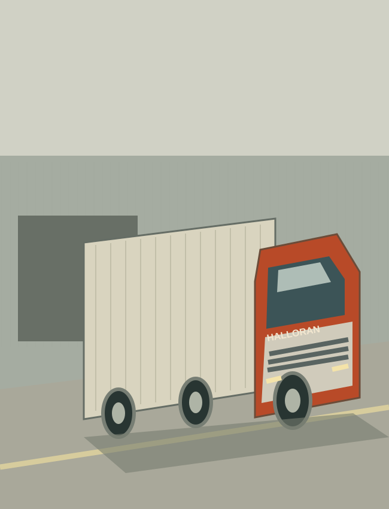

The call.
Collection postcode, delivery postcode, what it is and what it weighs. A proper conversation.
Full loads and pallet work across the Midlands and down to the south coast. Family run, third generation, and still the same traffic office number.
Fictional haulage firm. *Licence and accreditation are unverified brief content. No live booking or transport service.

Tamworth to Exeter, overnight at Bristol.
A run we do four times a week, in the supplied brief.
212MILES
Illustrative route, not a map, live tracking feed or delivery promise.
One customer, one trailer, straight through.
One to twelve pallets on a shared run. Next day to most postcodes in the brief, subject to actual service confirmation.
Chilled goods at two to eight degrees, with temperature logging specified in the concept.
Special movements by arrangement. Gross vehicle limits, payload, notification and any escort requirements must be assessed separately.
Every vehicle is Euro 6, tracked and inspected every six weeks according to the fictional brief. Payloads are illustrative, not confirmation that a particular load can be carried.
Collection postcode, delivery postcode, what it is and what it weighs. A proper conversation.
Vehicle and driver confirmed by name, with a collection window.
Progress monitored by the traffic office. If a delay develops, a clear update.
Signed proof of delivery scanned and emailed in the supplied example.
Illustrative workflow only. This static page has no tracking, dispatch or proof of delivery system.
All fictional and unverified. A real customer should obtain current documents directly from the operator.
Safety, driver hours and legal load requirements take priority over a promised collection time.


“They rang me before I noticed the delay. In fourteen years of hauliers that has happened twice, and both times it was this lot.”
Prepare a note for the traffic office. It stays in your browser and does not request transport or calculate a price.
Real load acceptance depends on vehicle suitability, dimensions, access, safe loading and legal limits.
Sample number. No booking or dispatch takes place on this demonstration site.